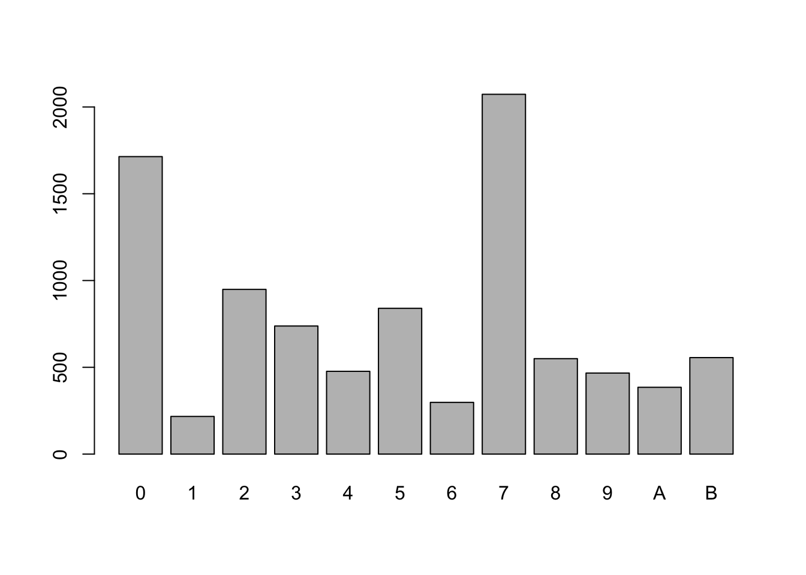
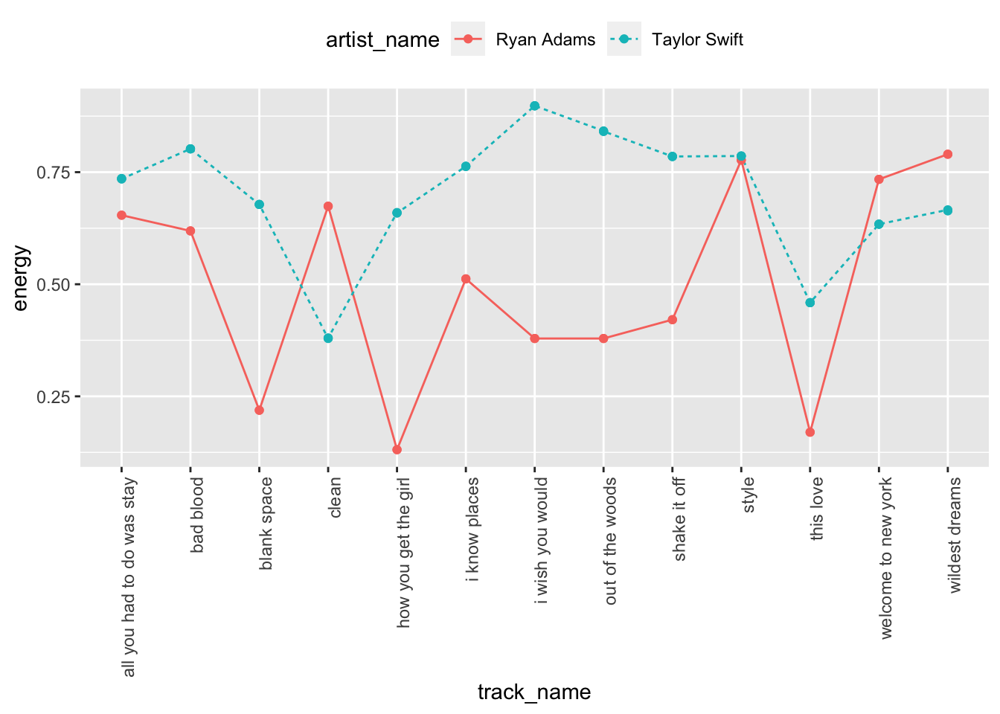

### installing everything as needed
# library(devtools)
# devtools::install_github("Computational-Cognitive-Musicology-Lab/humdrumR", build_vignettes = TRUE)
library(humdrumR)Week 1: Representing Musical Data
Overview
In the first week, we worked through basic introductions for the class, and went through the syllabus and the course structure.
HumdrumR
Here, we install the necessary library. As you can see, you will need to install devtools, which will allow you to install packages that aren’t on CRAN from github.
Then, we install the package (you can uncomment these installation lines as necessary for you).
In the code below, you can see how we load all of the Chopin files into a preludes variable with the readHumdrum function.
Then we subset it by spines. We are interested in various ways of calculating pitch, so we looked at pc (pitch class), as well as solfa and deg, which gave us solfege syllables and scale degrees, respectively.
We then plot this data in a barplot. Note the |> or “pipe” that we are using. The older tidyverse-style pipe (%>%) will also work here.
### Load in Chopin preludes, grab the left hand and see all the scale degrees.
preludes <- readHumdrum("~/gitcloud/corpora/humdrum_scores/Chopin/Preludes/*.krn")
left_hand <- subset(preludes, Spine == 1)
###solfa, deg, pc
table_data <- with(left_hand, pc(Token,simple=TRUE)) |> table()
barplot(table_data)
You can use a similar with syntax to get rhythm variables, as seen below:
## rhythminterval
rhythms <- with(preludes[2], duration(Token))Warning in is.na(x) || is.na(y): 'length(x) = 93 > 1' in coercion to
'logical(1)'
Warning in is.na(x) || is.na(y): 'length(x) = 93 > 1' in coercion to
'logical(1)'
Warning in is.na(x) || is.na(y): 'length(x) = 93 > 1' in coercion to
'logical(1)'
Warning in is.na(x) || is.na(y): 'length(x) = 93 > 1' in coercion to
'logical(1)'Warning in is.na(x) || is.na(y): 'length(x) = 84 > 1' in coercion to
'logical(1)'
Warning in is.na(x) || is.na(y): 'length(x) = 84 > 1' in coercion to
'logical(1)'Warning in is.na(x) || is.na(y): 'length(x) = 93 > 1' in coercion to
'logical(1)'
Warning in is.na(x) || is.na(y): 'length(x) = 93 > 1' in coercion to
'logical(1)'Warning in is.na(x) || is.na(y): 'length(x) = 11 > 1' in coercion to
'logical(1)'
Warning in is.na(x) || is.na(y): 'length(x) = 11 > 1' in coercion to
'logical(1)'Warning in is.na(x) || is.na(y): 'length(x) = 2 > 1' in coercion to
'logical(1)'
Warning in is.na(x) || is.na(y): 'length(x) = 2 > 1' in coercion to
'logical(1)'Warning in is.na(x) || is.na(y): 'length(x) = 93 > 1' in coercion to
'logical(1)'
Warning in is.na(x) || is.na(y): 'length(x) = 93 > 1' in coercion to
'logical(1)'Warning in is.na(x) || is.na(y): 'length(x) = 84 > 1' in coercion to
'logical(1)'
Warning in is.na(x) || is.na(y): 'length(x) = 84 > 1' in coercion to
'logical(1)'Warning in is.na(x) || is.na(y): 'length(x) = 11 > 1' in coercion to
'logical(1)'
Warning in is.na(x) || is.na(y): 'length(x) = 11 > 1' in coercion to
'logical(1)'Warning in is.na(x) || is.na(y): 'length(x) = 5 > 1' in coercion to
'logical(1)'
Warning in is.na(x) || is.na(y): 'length(x) = 5 > 1' in coercion to
'logical(1)'#### group exercise:
#### using a repertoire in the Humdrum scores collection,
#### print a table of most common musical events.Playing with Spotify
We can start by loading our spotifyr library, and tidyverse for good measure:
library(spotifyr)
library(tidyverse)── Attaching packages ─────────────────────────────────────── tidyverse 1.3.2 ──
✔ ggplot2 3.4.0 ✔ purrr 1.0.1
✔ tibble 3.2.1 ✔ dplyr 1.1.1
✔ tidyr 1.3.0 ✔ stringr 1.5.0
✔ readr 2.1.4 ✔ forcats 1.0.0
── Conflicts ────────────────────────────────────────── tidyverse_conflicts() ──
✖ purrr::%@%() masks rlang::%@%()
✖ dplyr::changes() masks humdrumR::changes()
✖ dplyr::count() masks humdrumR::count()
✖ tidyr::expand() masks humdrumR::expand()
✖ dplyr::filter() masks stats::filter()
✖ purrr::flatten() masks rlang::flatten()
✖ purrr::flatten_chr() masks rlang::flatten_chr()
✖ purrr::flatten_dbl() masks rlang::flatten_dbl()
✖ purrr::flatten_int() masks rlang::flatten_int()
✖ purrr::flatten_lgl() masks rlang::flatten_lgl()
✖ purrr::flatten_raw() masks rlang::flatten_raw()
✖ humdrumR::int() masks rlang::int()
✖ purrr::invoke() masks rlang::invoke()
✖ dplyr::lag() masks humdrumR::lag(), stats::lag()
✖ dplyr::lead() masks humdrumR::lead()
✖ purrr::splice() masks rlang::splice()
✖ dplyr::symdiff() masks bit::symdiff()
✖ purrr::transpose() masks humdrumR::transpose()You will need your own spotify client ID and client secret. You can get them by filling out the brief online form here.
### setting up spotify
Sys.setenv(SPOTIFY_CLIENT_ID = YOUR SPOTIFY CLIENT ID)
Sys.setenv(SPOTIFY_CLIENT_SECRET = YOUR SPOTIFY CLIENT SECRET)
access_token <- get_spotify_access_token()For the most part, in this class we will be looking at global features data (the “danceability” of a song), and track-level analysis features, such as chroma vectors.
Here we see how you might grab artist features for Ryan Adams and Taylor Swift, comparing the performances of each of their 1989 albums.
###getting artist level data
ryan_adams <- get_artist_audio_features('ryan adams')
taylor_swift <- get_artist_audio_features('taylor swift')Request failed [404]. Retrying in 1.5 seconds...Request failed [404]. Retrying in 1 seconds...### cleaning up the data
adams_swift <- rbind(ryan_adams, taylor_swift)
adams_swift_1989 <- adams_swift %>% filter(album_name == "1989")
adams_swift_1989$track_name <- tolower(adams_swift_1989$track_name)
## comparing energy
ggplot(adams_swift_1989, aes(x=track_name, y=energy, group=artist_name)) +
geom_line(aes(linetype=artist_name, color=artist_name))+
geom_point(aes(color=artist_name))+
theme(legend.position="top", axis.text.x = element_text(angle = 90, hjust = 1))